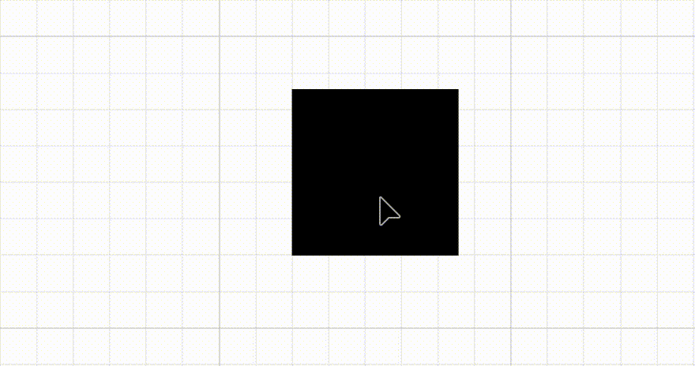
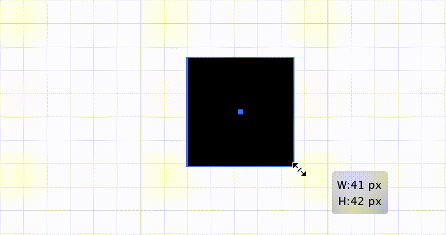
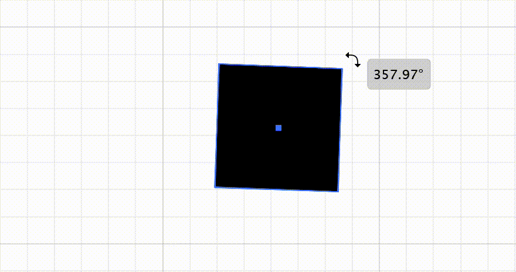
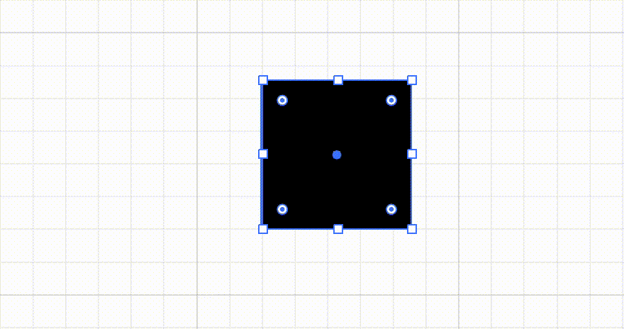

School of Engineering and Computer Science
School of Engineering and Computer Science
Vectors
A vector is a collection of numbers.A nice way to understand vectors is to think about them as lines. If we start at any arbitrary point in space, say $(0, 0)$, then the vector
$\left[\begin{array}{c}2\\4\end{array}\right]$
means that we are travelling 2 units right on the $x$ axis, and 4 units up on the $y$ axis, relative to that point; e.g. we're drawing the line from $(0, 0)$ to $(2, 4)$.To get a better feel for this, you can drag the arrowhead around in the example to the left, to see how that changes the vector that it represents (as shown below):
$\left[\begin{array}{c}2\\4\end{array}\right]$
Vectors represent a combination of magnitude and direction. The magnitude of a vector is given by the length of its line. The direction of a vector is the direction that the arrow is pointing in.
There are many cases where it is useful to have these two properties combined. For example, a single vector can be used to define a velocity: how fast the object is moving is represented by the magnitude, and the direction in which the object is moving can be simply represented by the direction of the vector.
A surprising amount of content in computer graphics (especially 3D computer graphics) makes use of vectors. The direction that a quad / tri in 3D faces (e.g. its normal) is a vector. The forces used to make objects move in a physics simulation are vectors. The direction from an object to a light source is a vector.
Vector Operations
Representations are great, but sometimes we also need to perform operations on vectors. There are a couple of easy ones to start off with:Adding and Subtracting Vectors
You can only add and subtract vectors which have the same dimensions. In all of our previous examples, our vectors have a dimension of 2, as they each have two elements, $x$ and $y$. However, you can have vectors with as many elements as you like in them. 3 dimensional vectors have three elements in them like so:$\left[\begin{array}{c}2\\4\\3\end{array}\right]$
Clearly, 4 dimensional vectors would have four elements, five dimensional would have five, and so on.If your vectors both have the same dimensions (e.g. same number of elements in them), then you simply add the items in each together to make a new vector, like so:
$\left[\begin{array}{c}2\\4\end{array}\right] + \left[\begin{array}{c}7\\8\end{array}\right]=\left[\begin{array}{c}2 + 7\\4 + 8\end{array}\right]=\left[\begin{array}{c}9\\12\end{array}\right]$
The same goes for subtraction:
$\left[\begin{array}{c}5\\0\end{array}\right] - \left[\begin{array}{c}2\\6\end{array}\right]=\left[\begin{array}{c}5 - 2\\0 - 6\end{array}\right]=\left[\begin{array}{c}3\\-6\end{array}\right]$
Interestingly, this can be represented graphically too. By arranging two vectors to add so that the head of one touches the tail of the other, their sum is represented by the vector which would turn the formation into a triangle. You can play with this in the example to the left.
$\left[\begin{array}{c}3\\3\end{array}\right] + \left[\begin{array}{c}5\\1\end{array}\right]=\left[\begin{array}{c}3 + 5\\3 + 1\end{array}\right]=\left[\begin{array}{c}8\\4\end{array}\right]$
Multiplying (by Scalars)
A Scalar is just an ordinary number, like $3$ or $7$. When you multiply a vector by a scalar, you multiply each of its inner values by the scalar, meaning that the direction of the vector doesn't change, but its magnitude does. Here is an example:$2\times\left[\begin{array}{c}3\\2\end{array}\right]=\left[\begin{array}{c}2\times3\\2\times2\end{array}\right]=\left[\begin{array}{c}6\\12\end{array}\right]$
You can view the effects of different scalar multipliers in the example to the left, with the dimmed vector being the original (for reference). You can change the scalar value using the slider below:
$-2$ $0$ $2$
Finding the Magnitude / Length
To find the length (magnitude) of a vector, you can use Pythagoras's theorem (which does indeed generalise up to higher dimensions). If you recall from previous Math classes, to find the unknown length of one side of a triangle when you know the lengths of the other two, you can use $\sqrt{a^2 + b^2}$, where $a$ and $b$ are the lengths of the two known sides.Why does this work? Well, for say the vector
$\left[\begin{array}{c}2\\4\end{array}\right]$
we know that it has a width of 2 on the X-axis, and a height of 4 on the Y-axis. Therefore, we have the two known sides, and are left with the one side we don't know: the actual vector. In this case, we could use the Pythagoras theorem to find the length like so:
$\sqrt{2^2 + 4^2} = 4.472$ (3 d.p.)
You can visualise this using the example to the left.
The Dot Product
The Dot Product is arguably the most useful vector operator. It takes in two vectors, and outputs a single scalar. Here is how the dot product calculation is performed:$\left[\begin{array}{c}2\\4\end{array}\right]\cdot\left[\begin{array}{c}3\\6\end{array}\right]=(2\times3) + (4\times6)=6+24=30$
As you can see, the values of each dimension of both vectors are multiplied together (as with adding and subtracting, both vectors must be of the same dimension), and then collectively summed together.What does this do? Well, we can think about it as growing each of the dimensions by a certain amount. Lets look at a few cases together:
| $\left[\begin{array}{c}2\\0\end{array}\right]\cdot\left[\begin{array}{c}4\\0\end{array}\right]=2\times4$ | The $x$ dimension grows four times larger, while nothing happens on the $y$ dimension. This is just normal multiplication! |
| $\left[\begin{array}{c}2\\0\end{array}\right]\cdot\left[\begin{array}{c}0\\4\end{array}\right]=0$ | Neither of the dimensions are kept. |
| $\left[\begin{array}{c}2\\4\end{array}\right]\cdot\left[\begin{array}{c}1\\1\end{array}\right]=2+4$ | Both dimensions keep their original size. |
| $\left[\begin{array}{c}2\\4\end{array}\right]\cdot\left[\begin{array}{c}3\\5\end{array}\right]=(2\times3)+(4\times5)$ | The $x$ dimension grows three times bigger, the $y$ dimension grows five times bigger. |
While it may now be a lot clearer as to what is going on, a good question remains: why would we want to do this?
Well, it turns out that while we can calculate the dot product as described above, we can also calculate it like so:
$\mathbf{a}\cdot\mathbf{b}=|\mathbf{a}|\times|\mathbf{b}|\times\mathrm{cos}\:\theta$
This is very useful, as we can re-arrange it to find the angle between vectors:
$\mathrm{cos}\:\theta=\frac{\mathbf{a}\cdot\mathbf{b}}{|\mathbf{a}|\times|\mathbf{b}|}$
This allows us to:
- Find out if vectors are perpendicular (e.g. at a right angle) to each other -- the dot product is always 0 if they are
- Project one vector onto another
- Find the closest point on a line
- We use $\frac{(B - A)\cdot(C - A)}{|B-A|^2}$ to find the closest point on the line (this is the point the yellow bar / grey bar are drawn to on the red vector). $A$ in our example is the origin point of the two vectors, $B$ is the end of the red vector, and $C$ is the end of the blue vector. Note that both $A$ and $B$ have $x$ and $y$ components -- the equation needs to be done twice, once to find the $x$ values, and once to find the $y$ values.
- If you wanted to find the length of the yellow portion (this is the projection), you could use $l=\frac{\mathbf{v_0}\cdot\mathbf{v_1}}{|\mathbf{v_0}|}$
Matrices
Matrices in general are covered more comprehensively elsewhere.- The offical course Maths Workbook
- The website matrixmultiplication.xyz is great to help visualise matrix multiplications.
Transformation Matrices
A transformation matrix is a square matrix which, when applied to a point, transforms it in space in some way. There are- Translation;
- Rotation;
- Scale;
- Shear (which is not used often, and not assessed in the course)
Transformation Matrices are applied by performing a matrix-vector multiplication, with a vector which represents the coordinates of the point to translate.
Note that throughout the following section we'll refer to transformations as taking place in 2D space, but all of this generalises to 3D as well.
Translation
 Translation is moving a shape across the $x$ and $y$ dimensions. Transformation matrices appear like so:
$\left[\begin{array}{c}1&0&x\\0&1&y\\0&0&1\end{array}\right]$
Where $x$ and $y$ are the amount to translate the shape in those respective directions.
Scale
 Scaling resizes a shape in the $x$ and $y$ dimensions.
$\left[\begin{array}{c}x&0&0\\0&y&0\\0&0&1\end{array}\right]$
Where $x$ and $y$ are the multiple to scale by (e.g. a value of 1 performs no scale, a value of 2 means twice as large on that dimension, and a value of 0.5 would mean half as large, etc).Negative values here perform reflection; e.g. an $x$ value of -1 would flip the shape along the $x$ axis.
Rotation
 Rotation rotates a shape. If you think in terms of three dimensions, the shape is being rotated around it's $z$ axis.
$\left[\begin{array}{c}\mathrm{cos}\:\theta&-\mathrm{sin}\:\theta&0\\\mathrm{sin}\:\theta&\mathrm{cos}\:\theta&0\\0&0&1\end{array}\right]$
Would rotate the shape by $\theta$ radians.
Shear
 Included for the sake of completeness, shear matrices skew a shape along one of its dimensions.
$\left[\begin{array}{c}1&x&0\\y&1&0\\0&0&1\end{array}\right]$
Would shear the shape by $x$ amount on the $x$ axis and $y$ amount on the $y$ axis.
Summary
What's great about transformation matrices is that they can be multiplied together. For example, you could multiply a rotation matrix with a scale matrix to get one single matrix which can apply both operators in one step. They also make it incredibly easy to encode these kinds of operations, and the operations required to carry out the transformations can be implemented very efficently in silicon on e.g. a graphics card.To let you play around with matrix operations, we have one last example. You can fill out the matrix below and click apply to update the positions of the points in the example to the left, and you can also move the points manually to create a different shape.
Reset matrix to:
Use Degrees: